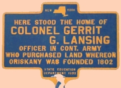

Gerrit G. Lansing
Yet another Gerrit G. Lansing was born in December 1760. He was the son of Gerrit J. Lansing and his second wife Jannetje Waters Lansing. This Albany native later was known as "Col. Gerrit G. Lansing." He grew up as a younger son in a large combined family in the Albany home of a merchant and gunsmith who was dead by 1782. His mother survived until 1805. John Lansing, Jr. and Abraham G. Lansing were among his notable siblings.
A number of contemporaries shared his name (the first Albany Lansing had been Gerrit Gerritse). In our quest to differentiate this individual from the other Gerrit G. Lansings we are admittedly cautious in the assignment of qualitative information.
He joined the crusade for American liberties - serving from 1779 to the end of the war, as an ensign in the Third then First New York Regiment of Continental army. As such, he is said to have served in actions from upstate New York to Yorktown. Perhaps, he was the Gerrit G. Lansing who received a land bounty right in conjunction with the first regiment of the Albany militia.
Because he was an Albany native, we would not expect that he would have been the merchant who purchased the "Freedom of Albany" in 1781. However, this Gerrit G. Lansing appears to be a most likely candidate.
His wife was the somewhat younger Montreal native Maria (Manette) Antill - daughter of an officer in the Revolutionary army. Perhaps they were married in 1786. Their first child was born in Albany in July 1789 but does not appear to have been christened at the Albany Dutch church. A number of subsequent children were born in various locations in upstate New York.
A substantial body of community-based qualitative infomation exists for Gerrit G. during the war years and immediately afterwards. However, we resist assigning it to this individual pending more wisdom on his whereabouts during that time.
In 1785, he is said to have surveyed the Oriskany Patent. He later purchased a substantial tract of land there.
His father-in-law died in 1789 and Gerrit G. was appointed administrator of his estate.
In 1790, at least seven "Garret Lansings" were listed as heads of households in New York State - five in Albany County. We are not certain which one (if any) was the subject of this profile.
About 1802, he re-located to central New York and is considered the founder of the village of Oriskany. For the next three decades, he was a manufacturer, public official, and pillar of his central New York community.
Albany native Col. Gerrit G. Lansing died at Oriskany in May 1831. He had lived more than seventy years. He received a military service pension which went to his widow until her death three years afterwards.